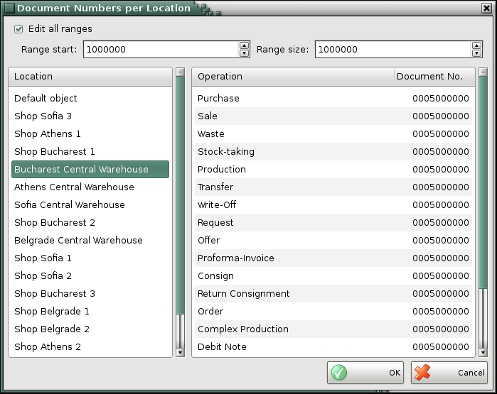

Document numbers per locations
Use the Document Numbers by Locations window to assign numbers to documents of each location. The window is active when the Document numbers per locations option is enabled.

By default, the application assigns document numbers at intervals of 1 000 000 and sorts them in the order of their entry in the database. When you enter a new location, it takes its place in the list. The application will offer you to assign a document number equal to the sum of 1 000 000.
To edit document number mark Edit all ranges check-box. You can enter range start and range size, that will be valid for all locations and documents. Also you can enter different number for each document. Click on the number you want to change, enter the desired value and press Enter. Make sure that the entered range between the locations is sufficiently large to not recover the numbers. In case that the range is less than 1 000 000, the application will allow you that the entered range is less than the recommended value.
By default, the application assigns document numbers at intervals of 1 000 000 and sorts locations in alphabetic order. When you enter a new location, it takes its place in the list. The application will offer you to assign a document number equal to the sum of 1 000 000. You can edit the next document number, but numbers must be in a sufficiently large interval. The application will display a warning for possible number overlapping in case the interval is less than 100 000. If the number is higher than 2 000 000 000, the application will display a message that the number is invalid.
Note: To prevent confusion in document numbers by locations, enter all locations and then enable the option to assign initial numbers by locations. After that you can perform operations.
To save changes click on the OK button. Click on Cancel if you wish to exit without saving changes.
�2006-2015 Microinvest, All rights reserved